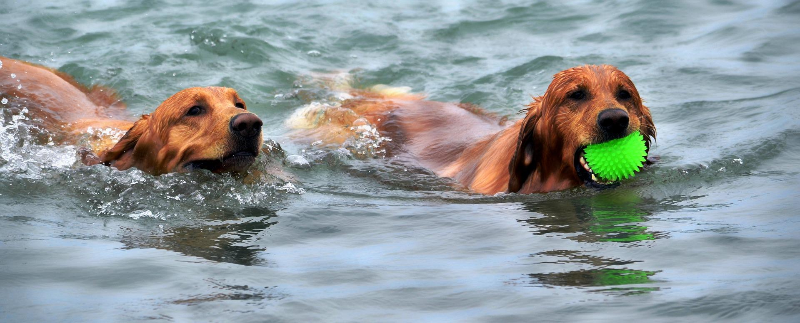

Boarding
We are happy to announce that we are now taking booking for our new boarding service. We have spent the last few years planning and building the best possible home away from home for your dog. Our specialised staff are trained to give your dog the absolute best care while they are with us and with an onsite vet we are prepared for any and all situation that may arise while your dog is in our care.
In addition to giving your dog their basic care while your dog is with us, we ensure that they are having a good time by offering many different forms of enrichment. Each day we offer activities for your dog to take part in including swimming in the onsite lake, freedom to run around our large, enclosed garden and having time to play and interact with other dogs.
At Furry Friends we understand that it can be hard to be away from your dog at any time, so we provide you with daily updates on your dog and how they’re doing while in our care. For more information on our dog boarding please visit our booking page